Discover your sign, compatibility, lucky elements, and ancient wisdom for a happier life.
Explore Your Zodiac →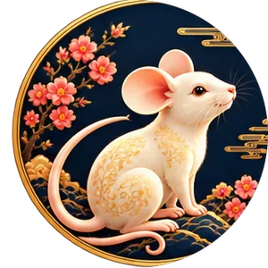
Smart, adaptable, and quick-witted.
Explore →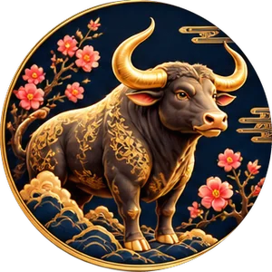
Reliable, hard-working, and honest.
Explore →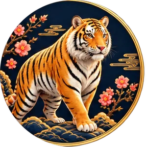
Brave, confident, and competitive.
Explore →Gentle, diplomatic, and kind.
Explore →Confident, charismatic, and ambitious.
Explore →Wise, intuitive, and graceful.
Explore →Energetic, adventurous, and free-spirited.
Explore →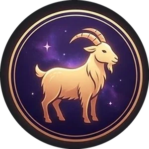
Gentle, creative, and caring.
Explore →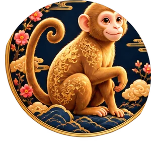
Clever, witty, and curious.
Explore →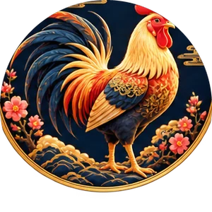
Observant, confident, and hard-working.
Explore →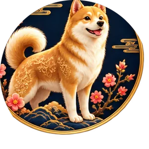
Loyal, protective, and honest.
Explore →Warm-hearted, generous, and sincere.
Explore →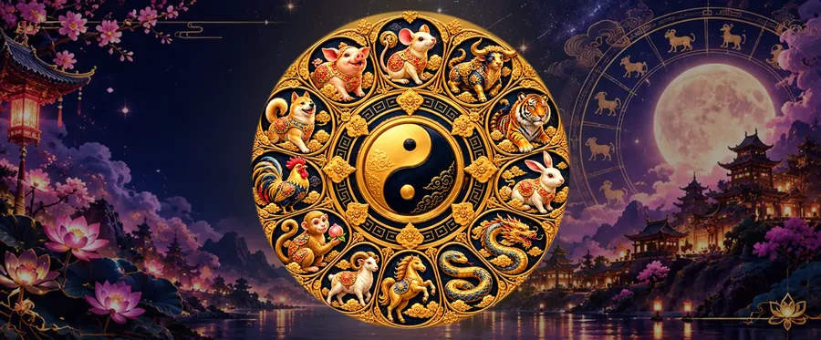
Chinese Zodiac Guide
Every year from 1960 to 2027: animal, element and exact start and end dates.
Read article →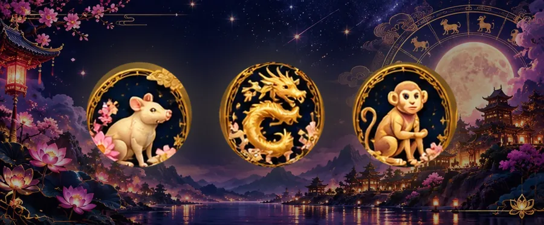
Calendar Guide
Why February is so short, why it gets a leap day, and why every 29 February baby is a Rat, Dragon or Monkey.
Read article →Chinese Zodiac Guide
Most January babies belong to the previous year's animal. The rule, and the exact dates for every year.
Read article →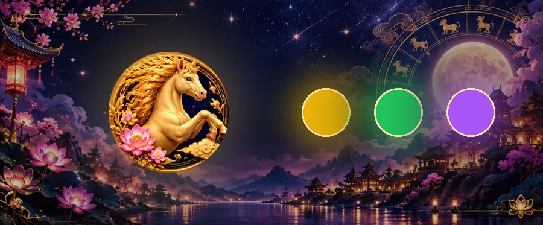
Chinese Zodiac Guide
Yellow, green and purple: the Horse's lucky colors, the color of your birth element, and red in a Horse year.
Read article →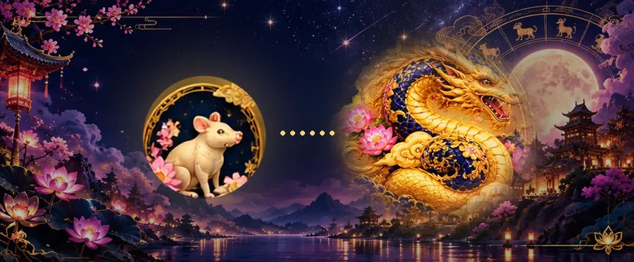
Compatibility Guide
Why tradition calls Rat and Dragon a natural match, in love, friendship and business, and what to watch for.
Read article →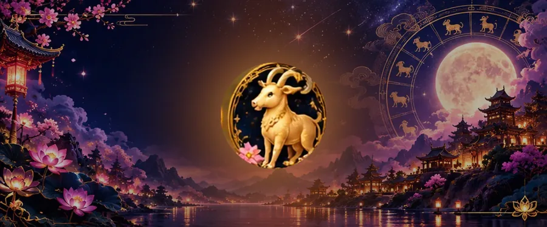
Chinese Zodiac Guide
The Fire Goat year begins on 6 February 2027. How all 12 signs are traditionally read in a Goat year.
Read article →History & Culture
Why Phnom Penh's lotus-shaped Independence Monument was built, who designed it, and what happens there every 9 November.
Read article →The Five Elements
What the Water element means, every Water year from 1944 to 2035, and the Water personality.
Read article →The Five Elements
What the Metal element means, every Metal year from 1944 to 2035, and the Metal personality.
Read article →The Five Elements
What the Earth element means, every Earth year from 1944 to 2035, and the Earth personality.
Read article →The Five Elements
What the Fire element means, every Fire year from 1944 to 2035, and the Fire personality.
Read article →The Five Elements
What the Wood element means, every Wood year from 1944 to 2035, and the Wood personality.
Read article →Chinese Zodiac Guide
The six opposite pairs of the Chinese zodiac, and why one sign is told to take it easy every day.
Read article →Chinese Zodiac Guide
The twelve double hours of the Chinese day, from the Rat hour at 11 pm, and how our daily lucky time is chosen.
Read article →Chinese Zodiac Guide
The Year of the Goat begins on 6 February 2027. Who counts as a Goat, and why January babies are still Horses.
Read article →Chinese Zodiac Guide
Why every day has a zodiac animal, and a simple way to find the animal of any date.
Read article →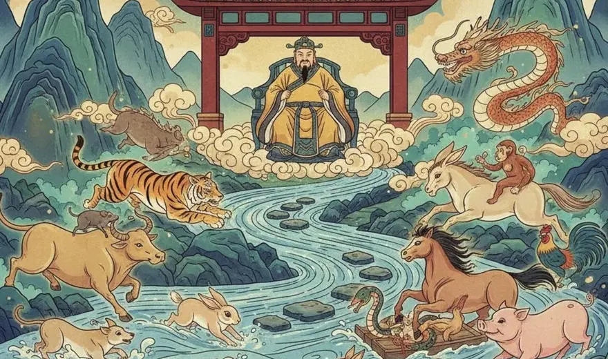
Zodiac Stories & Legends
The Great Race, the Rat's trick, the Dragon's kindness and more: eight stories behind the twelve animals.
Read the stories →Khmer Culture
Why many Cambodian families wait until Vassa ends to hold a wedding, and why it is a custom rather than a Buddhist rule.
Read article →Buddhist Traditions
Why Cambodians offer robes to monks after Buddhist Lent, the 2026 season dates, and what happens on a Kathen day.
Read article →Cambodian Culture
Why Cambodia observes October 29, what happened in 2004, and how this national day is commemorated.
Read article →Zodiac Basics
Learn how Wood, Fire, Earth, Metal, and Water add another layer to zodiac tradition.
Read article →Love & Compatibility
Explore traditional zodiac pairings for love, friendship, and long-term relationships.
Read article →Traditional Guidance
Discover Cambodian traditions for choosing a meaningful date for a new beginning.
Read article →Khmer Culture
Learn about waxing and waning moon days and finding your Khmer lunar birth date.
Read article →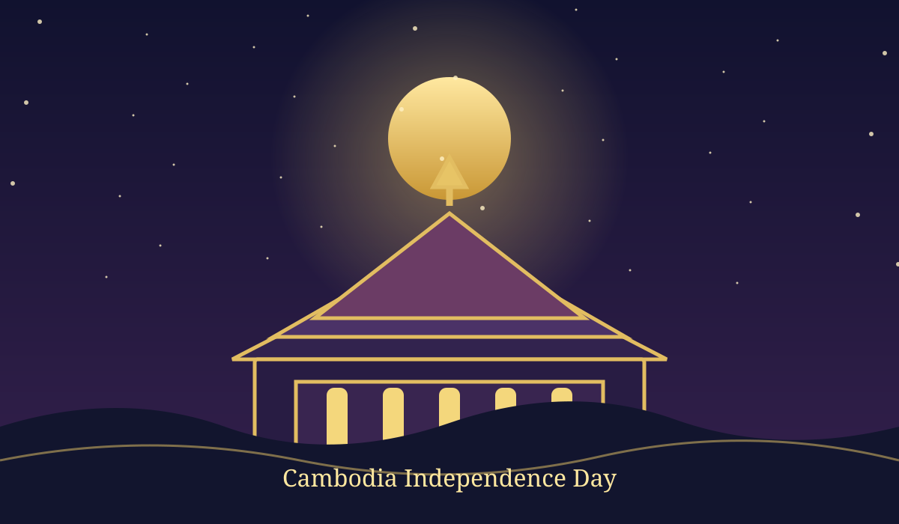
Cambodian Culture
Why November 9 commemorates independence in 1953, national ceremonies, and ways to mark the day.
Read article →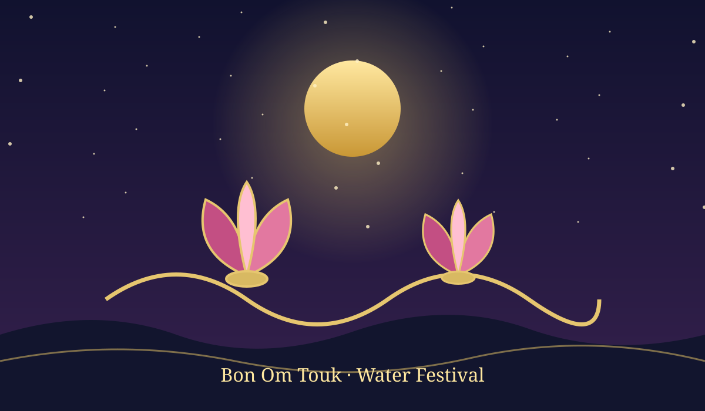
Festivals & Traditions
Explore boat races, the Tonle Sap flow reversal, moon traditions, and visitor tips.
Read article →Cambodian History
Understand the meaning of December 29 and its connection to peace and reconciliation.
Read article →The Chinese zodiac is a traditional system based on a 12-year cycle, with each year represented by an animal sign. It is used to explore personality traits, compatibility, lucky elements, relationships, and more.
ស្វែងយល់អំពីនិមិត្តសញ្ញារបស់អ្នក ភាពសមស្រប ធាតុសំណាង និងប្រាជ្ញាបុរាណសម្រាប់ជីវិតរីករាយជាងមុន។
ស្វែងយល់និមិត្តសញ្ញារបស់អ្នក →(កណ្ដុរ)
ឆ្លាតវៃ សម្របខ្លួនបាន និងឆាប់យល់។
ស្វែងយល់ →(គោ)
ទុកចិត្តបាន ឧស្សាហ៍ព្យាយាម និងស្មោះត្រង់។
ស្វែងយល់ →(ខ្លា)
ក្លាហាន ជឿជាក់លើខ្លួនឯង និងប្រកួតប្រជែង។
ស្វែងយល់ →(ទន្សាយ)
សុភាពរាបសា គិតដល់អ្នកដទៃ និងទន់ភ្លន់។
ស្វែងយល់ →(នាគ)
ជឿជាក់លើខ្លួនឯង ទាក់ទាញ និងមានមហិច្ឆតា។
ស្វែងយល់ →(ពស់)
ឈ្លាសវៃ ចេះវិភាគ និងសុភាព។
ស្វែងយល់ →(សេះ)
ឆ្អែតថាមពល មានឯករាជ្យ និងចូលចិត្តសេរីភាព។
ស្វែងយល់ →(ពពែ)
សុភាពរាបសា ច្នៃប្រឌិត និងយកចិត្តទុកដាក់។
ស្វែងយល់ →(ស្វា)
ឆ្លាតវៃ ចង់ដឹងចង់ឃើញ និងលេងកំប្លែង។
ស្វែងយល់ →(មាន់)
ល្អិតល្អន់ ជឿជាក់លើខ្លួនឯង និងឧស្សាហ៍ព្យាយាម។
ស្វែងយល់ →(ឆ្កែ)
ស្មោះត្រង់ ការពារ និងត្រង់។
ស្វែងយល់ →(ជ្រូក)
កក់ក្តៅ សន្ដោស និងស្មោះត្រង់។
ស្វែងយល់ →វប្បធម៌ខ្មែរ
ហេតុអ្វីគ្រួសារខ្មែរជាច្រើន រង់ចាំដល់ចេញព្រះវស្សា ទើបរៀបការ និងហេតុអ្វីវាជាទំនៀមទម្លាប់ មិនមែនជាវិន័យព្រះពុទ្ធសាសនា។
អានអត្ថបទ →ប្រពៃណីព្រះពុទ្ធសាសនា
ហេតុអ្វីពុទ្ធបរិស័ទខ្មែរវេរចីវរប្រគេនព្រះសង្ឃក្រោយចេញព្រះវស្សា កាលបរិច្ឆេទរដូវកាលឆ្នាំ 2026 និងទិដ្ឋភាពថ្ងៃបុណ្យកឋិន។
អានអត្ថបទ →វប្បធម៌ខ្មែរ
ហេតុអ្វីកម្ពុជាប្រារព្ធថ្ងៃទី២៩ ខែតុលា ប្រវត្តិនៃឆ្នាំ២០០៤ និងអត្ថន័យនៃថ្ងៃជាតិនេះ។
អានអត្ថបទ →មូលដ្ឋានរាសី
ស្វែងយល់អំពីធាតុឈើ ភ្លើង ដី លោហៈ និងទឹកក្នុងប្រពៃណីរាសី។
អានអត្ថបទ →ស្នេហា និងភាពសមស្រប
ស្វែងយល់ពីគូរាសីតាមប្រពៃណីសម្រាប់ស្នេហា មិត្តភាព និងទំនាក់ទំនងយូរអង្វែង។
អានអត្ថបទ →ការណែនាំតាមប្រពៃណី
ស្វែងយល់ពីប្រពៃណីខ្មែរក្នុងការជ្រើសរើសថ្ងៃសម្រាប់ការចាប់ផ្តើមថ្មី។
អានអត្ថបទ →វប្បធម៌ខ្មែរ
ស្វែងយល់ពីថ្ងៃកើត ថ្ងៃរោច និងរបៀបរកថ្ងៃខែកំណើតតាមចន្ទគតិខ្មែរ។
អានអត្ថបទ →វប្បធម៌កម្ពុជា
ស្វែងយល់ពីមូលហេតុដែលថ្ងៃទី៩ ខែវិច្ឆិកា រំលឹកដល់ឯករាជ្យឆ្នាំ១៩៥៣ និងពិធីអបអរសាទរ។
អានអត្ថបទ →ពិធីបុណ្យ និងប្រពៃណី
ស្វែងយល់ពីការប្រណាំងទូក ការប្រែទិសទឹកទន្លេសាប និងប្រពៃណីពាក់ព័ន្ធ។
អានអត្ថបទ →ប្រវត្តិសាស្ត្រកម្ពុជា
ស្វែងយល់ពីអត្ថន័យនៃថ្ងៃទី២៩ ខែធ្នូ និងដំណើរការផ្សះផ្សាជាតិ។
អានអត្ថបទ →និមិត្តសញ្ញាចិនជាប្រព័ន្ធប្រពៃណីដែលផ្អែកលើវដ្តកំណើត12ឆ្នាំ ដោយឆ្នាំនីមួយៗតំណាងដោយសត្វនិមិត្តសញ្ញា។ វាត្រូវបានប្រើដើម្បីស្វែងយល់អំពីលក្ខណៈបុគ្គលិកលក្ខណៈ ភាពសមស្រប ធាតុសំណាង ទំនាក់ទំនង និងច្រើនទៀត។
柬埔寨文化
了解柬埔寨为何在10月29日纪念加冕日、2004年的历史，以及这一国家纪念日的意义。
阅读文章 →生肖基础
了解木、火、土、金、水如何为生肖传统增添另一层含义。
阅读文章 →爱情与配对
探索传统生肖配对在爱情、友谊和长期关系中的意义。
阅读文章 →传统指南
了解柬埔寨传统中为事业新起点选择有意义日期的方式。
阅读文章 →高棉文化
认识月亮盈亏日期，并了解如何查找自己的高棉阴历生日。
阅读文章 →柬埔寨文化
了解11月9日为何纪念1953年独立，以及相关国家仪式与纪念方式。
阅读文章 →节庆与传统
了解龙舟竞赛、洞里萨河水流逆转、赏月传统与游客建议。
阅读文章 →柬埔寨历史
了解12月29日的意义，以及它与和平和民族和解的联系。
阅读文章 →中国生肖是一种以十二年为周期的传统体系，每一年由一个生肖代表。人们用它来探索性格特点、配对、幸运元素、人际关系等。